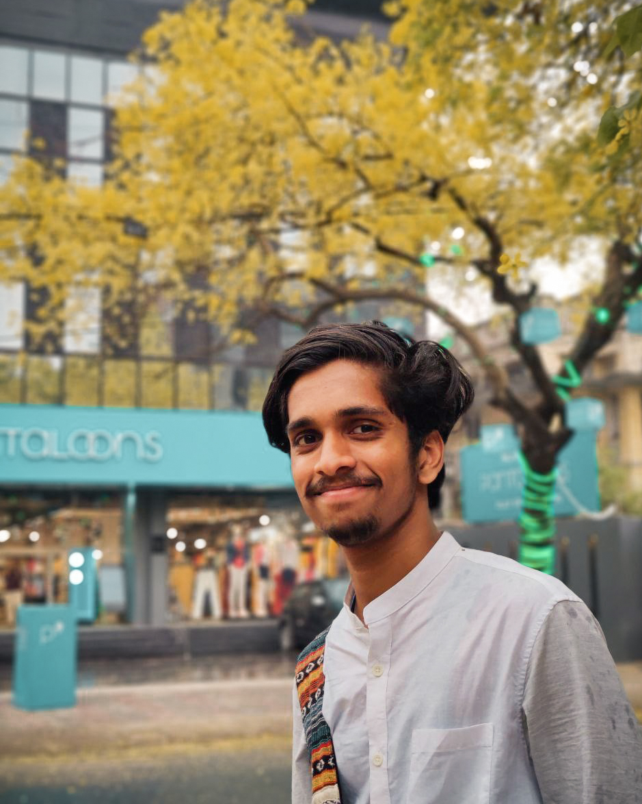

About Me
Professional and academic background

ADHITH M K
theadhith@gmail.com |
+91 8330883873
LinkedIn |
Twitter |
GitHub |
Bluesky
An ecological researcher specializing in Ecological Informatics with a strong foundation in Wildlife Conservation and Management. Currently pursuing a Master's in Ecology at Kerala University of Digital Sciences, Innovation and Technology, combining ecological knowledge with modern computational approaches. Experienced in biodiversity assessment and field research, with technical proficiency in R, Python, and GIS. Passionate about using data-driven approaches for wildlife conservation, ecosystem restoration, and sustainable development, seeking opportunities to contribute to innovative research projects in ecological science.
Broad Interests
- Wildlife Conservation and Management
- Ecosystem Restoration
- Sustainable Development
Research Interests
- Acoustic Ecology
- Ecological Informatics
- Animal Behaviour
- Species Interaction
- Remote Sensing
Education
Academic background and qualifications
M.Sc. in Ecology
Kerala University of Digital Sciences, Innovation and Technology
Aug 2023 - Present
Specialization in Ecological Informatics
CGPA: 7.5/10 (First Class with Distinction)
Relevant Coursework: Advanced GIS, Remote Sensing, Climate Modeling, Ecological Data Analysis
Recipient of the Shillim Institute Conservation Fellowship
B.Sc. in Zoology
Shivaji College, University of Delhi
Jun 2019 - Mar 2022
Major in Zoology with focus on wildlife conservation
CGPA: 7.8/10 (First Class)
Relevant Coursework: Wildlife Conservation, Biodiversity Assessment, Field Research Methods
Higher Secondary Education
Farook Higher Secondary School, Kozhikode
Jul 2017 - Mar 2019
Science Stream with Biology
Percentage: 92% (A+)
Key Subjects: Biology, Chemistry, Physics, Mathematics, English
Publications
Academic publications and research papers
Projects & Hackathons
Research and development work
Bird Species Identification with Regional Custom CNN Model
Jan 2025As a Shillim Institute Conservation Fellow, I led a project on bird species identification using a custom ResNet50-based CNN model to evaluate restoration success in the Northern Western Ghats' Pavana Dam Catchment. The project involved:
- Deploying AudioMoth devices across 22 sites for acoustic data collection
- Analyzing distributions of 14 bird species in various habitat types
- Achieving 92.95% model accuracy in species identification
- Correlating acoustic data with habitat characteristics to inform conservation strategies
Smart India Hackathon 2024
Sep 2024As part of the Smart India Hackathon, our team addressed a challenge from the Punjab Skill Development Mission (PSDM) in the Smart Education category. We developed a freelancing platform that connects freelancers with employers and provides project management tools.
- Designed and developed a full-stack freelancing platform
- Implemented features for project posting, bidding, and management
- Gained hands-on experience in web application development and UI/UX design
LULC Change Analysis in Kannoth Padam
Jun 2024Conducted a comprehensive analysis of land use and land cover changes in Kannoth Padam, Thrissur, Kerala from 2014 to 2024 using geospatial technologies.
- Processed and analyzed high-resolution satellite imagery
- Classified land cover into five primary categories: villages, mountains, rocks, crops, and water bodies
- Produced detailed change detection maps and statistics
- Documented spatial patterns of landscape transformation over the decade
Certifications
Professional development and academic achievements
Ecology: Ecosystem Dynamics and Conservation
American Museum of Natural History (Coursera)
Animal Behaviour and Welfare
University of Edinburgh (Coursera)
English Composition I
Duke University (Coursera)
Large Marine Ecosystems: Assessment and Management
University of Cape Town, NOAA, GEF, UNDP, UNESCO-IOC, UNEP
R Programming
Johns Hopkins University (Coursera)
Introduction to Generative AI
Google Cloud (Coursera)
Skills and Expertise
Technical and professional skills
Technical Expertise
Professional Skills
Languages
Awards & Achievements
Recognition and accomplishments
Shillim Institute Conservation Fellowship
January 2025
Secured the prestigious Shillim Institute Conservation Fellowship during my Master's program to support dissertation research. Developed a CNN model for detecting pre-trained species in soundscape audio recordings using a supervised learning framework, customizable for specific target species, to enhance conservation efforts.
University Level Sports Achievements
2024
- 1st Place - Mixed Doubles Table Tennis, University Level Intramural House Competitions
- 2nd Place - Volleyball, University Level Intramural House Competitions
- 3rd Place - 4x400 m Relay, University Annual Athletics Meet
- 3rd Place - Men's Cricket, University Level Intramural House Competitions
Activities & Volunteering
Professional and community involvement
Volunteer Work
National Service Scheme
Active member for two years, completed 240 hours of service and participated in a seven-day special camp.
Junior Red Cross
C 'level cadet, completed training on Road Safety and First aid in 2016.
Projects & Initiatives
She-Skill
Developed an app named SheSkill to empower women in the Vizhinjam fishing community, helping them learn new skills and enhance their economic status.
Quit One Challenge
Volunteered in the Quit One Challenge organized by School of Informatics, Digital University Kerala, focused on promoting sustainability.
Aaranyakam
Part of the event organizing and designing team for Aaranyakam, Eco-fest hosted by School of Informatics in collaboration with Student Council of Digital University Kerala.
Join the Conversation
Stay updated with the latest research and developments in ecological informatics.
Read More
Connect With Me